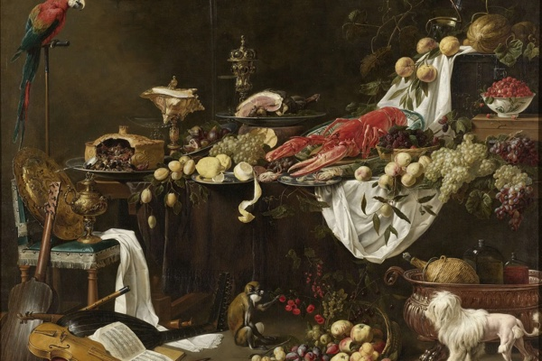
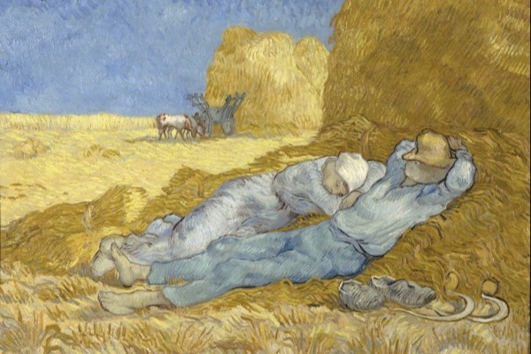

-

Big Enough
More weekly sets can build more muscle, with smaller returns. The training plans and protein tool help you choose a routine you can keep doing.
-
Still Moving
Brisk walking counts as aerobic activity. Fit cardio around lifting, total your weekly activity, and see what stretching and strength work can change.
-

What You're Supposed to Eat
In a controlled feeding trial, people ate more from the ultra-processed menu. Compare that result with diet trials, protein and fiber targets, and the evidence for supplements.
-

The Other Hours
Blood pressure can be high without symptoms. Read about sleep, smoking, screening, and the limits of popular recovery treatments, then use the checklist to choose a place to start.